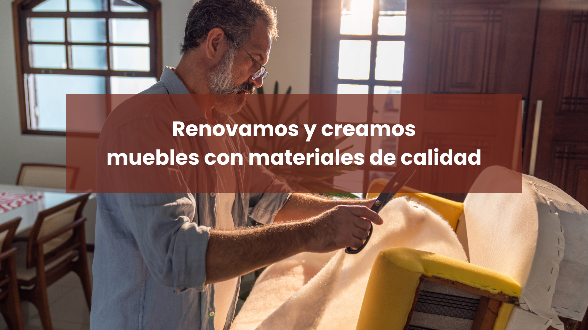

.png)



El Sofá Barroco Montclair fue diseñado en 1752 en un prestigioso taller de ebanistería en París, Francia. Encargado por la familia Montclair, nobles con gran influencia en la corte de Luis XV, este sofá fue concebido para decorar un elegante salón de recepciones. Su diseño combina la opulencia barroca con la creciente influencia del rococó, caracterizado por formas curvas y una estética refinada que simbolizaba el lujo y el buen gusto de la época. A lo largo de los siglos, esta pieza se convirtió en un ícono del mobiliario aristocrático, inspirando reproducciones y adaptaciones en distintas épocas.
El Sofá Barroco Montclair está construido con una sólida estructura de madera de caoba, esculpida a mano por artesanos de la época. Su tapicería, confeccionada en terciopelo de algodón color crema, proporciona suavidad y elegancia, mientras que los cojines rellenos de plumas de ganso y crin de caballo aseguran un equilibrio perfecto entre comodidad y durabilidad. Las patas cabriolé, ornamentadas con finos detalles tallados, refuerzan la estética barroca del mueble, convirtiéndolo en una pieza única que trasciende el tiempo.
Restaurar muebles antiguos no solo preserva la belleza y la historia de una pieza única, sino que también es una inversión económica y ambiental. Al optar por la restauración, se evita la fabricación de nuevos productos, lo que contribuye al cuidado del medio ambiente. Además, al devolver la funcionalidad y el esplendor a los muebles, se mantiene la calidad de materiales que no se encuentran fácilmente en el mobiliario moderno. La restauración permite que cada pieza adquiera una nueva vida, fusionando lo clásico con las necesidades contemporáneas, manteniendo su valor a lo largo del tiempo.
El proceso de restauración de nuestros muebles es meticuloso y personalizado. Primero, realizamos una evaluación exhaustiva de la pieza para identificar áreas de daño y desgaste. Posteriormente, se lleva a cabo la limpieza profunda y la reparación de la estructura, garantizando su estabilidad. Luego, restauramos la tapicería, eligiendo materiales que se asemejen al original o que se ajusten a las preferencias del cliente. Las técnicas de restauración incluyen el trabajo con madera, restauración de acabados y tratamientos especiales para cada tipo de material. El objetivo final es devolverle a cada mueble su esplendor original sin perder su carácter y autenticidad.
En Fufurufu, la pasión por la restauración y el diseño de muebles nos une. Somos una empresa compuesta por cuatro jóvenes hondureños ubicados en Suiza, comprometidos con dar nueva vida a piezas únicas, fusionando la elegancia del pasado con la funcionalidad del presente.
Nos especializamos en la recuperación y restauración de muebles vintage, utilizando materiales sostenibles y técnicas artesanales que garantizan calidad, autenticidad y durabilidad. Cada pieza que trabajamos cuenta una historia, y nuestro objetivo es preservar su esencia mientras la adaptamos a los estándares modernos de confort y diseño.
Creemos en el impacto de un mobiliario bien conservado, no solo por su valor estético, sino también por su contribución a un mundo más sostenible. En Fufurufu, cada mueble restaurado es un homenaje a la tradición, la innovación y el arte de transformar espacios con historia.
hello@fufurufu.com
(123) 456-7890
123 Anywhere St.
Any City ST 12345